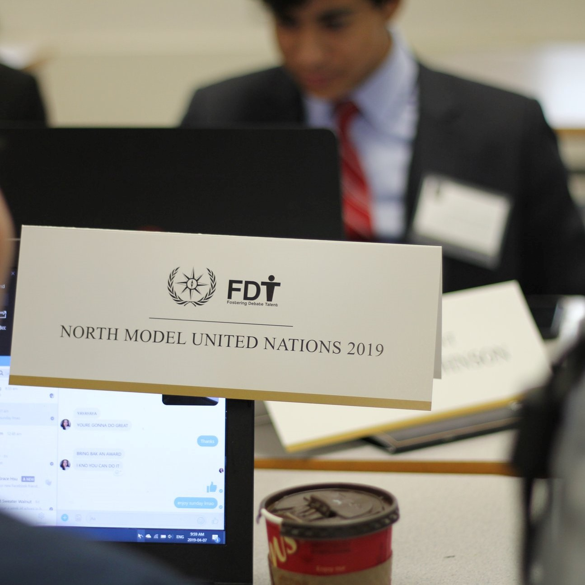

A Few Tips For You
CAHSMUN, VMUN, PacificMUN, CAIMUN, NorthMUN, PRMUN, PWMUN.... so many conferences!! What's the difference between hotel conferences and and day conferences?
How do you get an award? What is Rules of Procedure or ROP? Don't worry in this section, you will learn what to expect and how to prepare for a MUN conference.
Click any of the images to begin.
What to Expect
As a first-time delegate, it can sometimes be hard to the right conference and committee for you. Regardless, it is necessary for you to show up prepared and ready for the exciting discussion and debate. The MUN environment is professional, exhilarating, and comedic at times. It is hard to predict the direction of the committee once it starts, however with the right tools, you can learn how to direct the flow of debate.here are many in which you can prepare for the conference. Whether that is researching your topic, preplaning your speeches, or even talking to a mirror in order to boost your public speaking skills. All of these examples are vital to your success in the committee and growth as a delegate. There is no single way to learn how to MUN however, a good foundation to start would be researching and practicing towards your success.

Example Papers
There are 3 types of papers that you need to know about: backgrounders, position papers, and resolution papers. The backgrounder is the research provided to you by your dias team while the position paper is a one paged essay regarding your country's stance on the problem. The resolution paper is a comprehensive solution paper sectioned by clauses; assing the resolution paper is the goal of the committee.